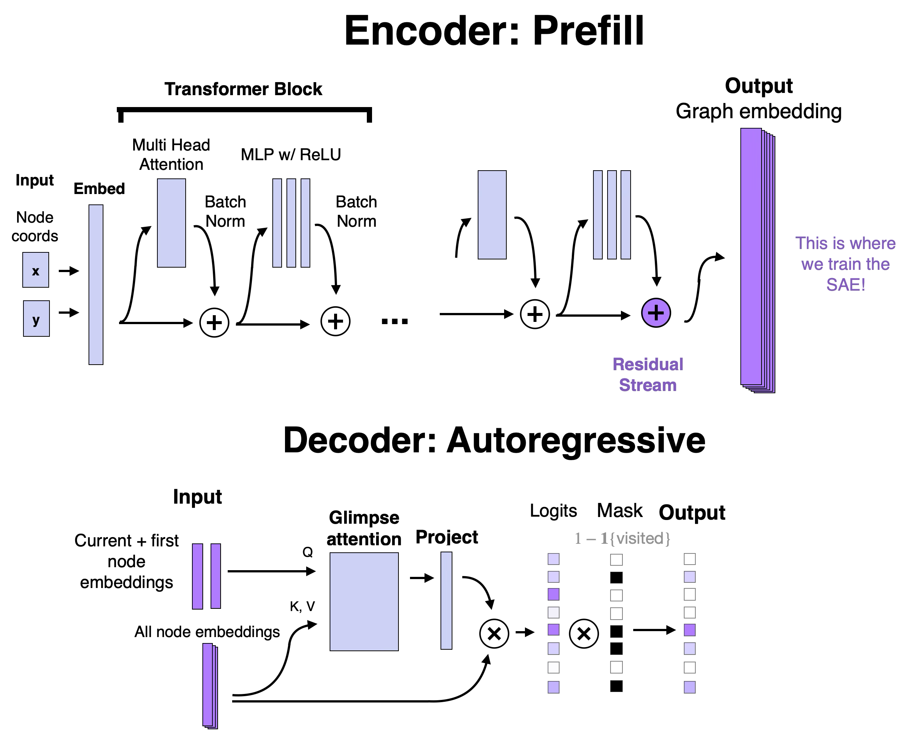

Architecture

System architecture showing the flow from TSP instances through the policy network to SAE feature extraction and analysis.
We use (RL4CO)'s implementation of (Kool et al.)'s Transformer Pointer Network, which performs next-node prediction to autoregressively construct TSP solutions. We focus on TSP instances with a fixed size of 100 nodes.
Training Parameters
| Parameter | Value |
|---|---|
| lr | 1e-05 |
| num_epochs | 1000 |
| num_instances | 100000 |
| num_val | 100 |
| num_loc | 100 |
| temperature | 1.0 |
| embed_dim | 256 |
| n_encoder_layers | 5 |
| checkpoint_freq | 20 |
| dropout | 0.1 |
| attention_dropout | 0.0 |